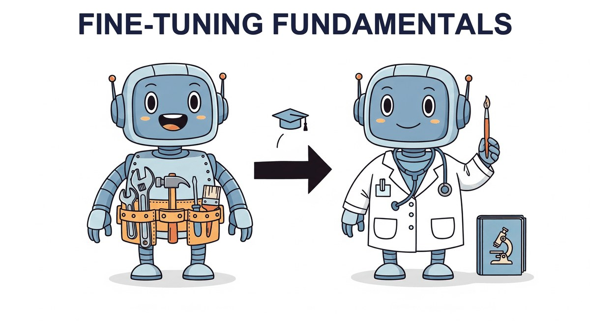

"The secret of getting ahead is getting started. The secret of fine-tuning is knowing when to stop."
Finetune, Wisely Restrained AI Agent
You have data (Chapter 17). Now you fine-tune. This chapter is the canonical home for fine-tuning fundamentals: when to fine-tune at all (vs. prompting or RAG), full fine-tuning vs. parameter-efficient methods, catastrophic forgetting, and the 5-question decision tree (see Section 16.1) that the rest of the book cross-references when fine-tuning comes up.
Chapter Overview
A small fine-tuned model often beats GPT-4 on the narrow task you actually care about, at a fraction of the latency and cost. That is the practitioner secret behind most production LLM products in 2026: a 7B Llama or Qwen, fine-tuned on a few thousand high-quality examples, runs your support classifier or your contract extractor with higher accuracy and a fraction of the bill that an API generalist incurs. The catch is knowing when fine-tuning actually wins, and when prompting or RAG is the cheaper answer.
This chapter covers the complete fine-tuning workflow from first principles. You will learn when fine-tuning is the right approach (and when prompting or RAG is a better alternative), how to prepare high-quality training data in the correct format, and how to run supervised fine-tuning with Hugging Face TRL. The chapter also covers API-based fine-tuning through providers like OpenAI and Google, fine-tuning for embedding and classification tasks, and strategies for adapting models to handle longer contexts.
By the end of this chapter, you will be able to make informed decisions about when to fine-tune, prepare datasets in standard formats, execute training runs with appropriate hyperparameters, monitor training progress, and adapt models for specialized tasks including classification, representation learning, and long-context processing.
Fine-tuning transforms a general-purpose LLM into a specialist for your domain. This chapter covers the full workflow: data preparation, training configuration, catastrophic forgetting mitigation, and evaluation. It provides the foundation for the parameter-efficient methods in Chapter 19 and alignment techniques in Chapter 20.
- Apply a decision framework to choose between prompting, RAG, and fine-tuning for a given task, informed by evaluation metrics
- Prepare training datasets in standard formats (Alpaca, ShareGPT, ChatML) with appropriate splits and balancing strategies
- Execute supervised fine-tuning using Hugging Face Trainer and TRL, selecting appropriate hyperparameters for learning rate, batch size, warmup, and weight decay
- Use provider APIs (OpenAI, Google Vertex AI) for fine-tuning and evaluate trade-offs between ease, control, and cost
- Fine-tune encoder and decoder models for representation learning and embedding tasks
- Add and train classification heads for single-label, multi-label, and token-level classification tasks
- Apply context extension techniques (RoPE scaling, position interpolation) to adapt models for longer input sequences
- Monitor training with W&B and TensorBoard, diagnose common issues, and mitigate catastrophic forgetting; prepare models for alignment workflows
Prerequisites
- Chapter 1: Tokenization (understanding how text is converted to tokens)
- Chapter 3: Transformer Architecture (self-attention, positional encoding, feed-forward layers)
- Chapter 6: Pretraining (training objectives, loss functions, training dynamics)
- Chapter 11: LLM APIs (API usage, structured outputs)
- Chapter 15: Synthetic Data Generation (creating training data at scale)
- Familiarity with PyTorch, gradient descent, and basic training loops
Sections
- 16.1 When and Why to Fine-Tune Fine-tuning is powerful, but it is not always the right tool. Entry
- 16.2 Data Preparation for Fine-Tuning Data quality is the single biggest lever in fine-tuning. Entry
- 16.3 Supervised Fine-Tuning (SFT) Supervised fine-tuning (SFT) is the core technique for teaching a pretrained model to follow instructions and produce specific outputs. Intermediate
- 16.4 Fine-Tuning via Provider APIs Not every team needs to manage their own GPU cluster. Intermediate
- 16.5 Fine-Tuning for Representation Learning Embeddings are the backbone of modern search, retrieval, and recommendation systems. Intermediate
- 16.6 Fine-Tuning for Classification & Sequence Tasks Classification is the most common fine-tuning task in production NLP. Advanced
- 16.7 Adapting Models for Long Text Most real-world documents are longer than models were trained to handle. Advanced
Objective
Take a small base model (GPT2-medium or Pythia-410M) and run a full fine-tune on a domain corpus. You will measure two things that matter: (a) gains on your target task, (b) loss on a held-out general benchmark. This is the canonical "what fine-tuning costs you" experiment, and the answer motivates LoRA in Chapter 17.
Steps
- Step 1: Choose corpus + baseline. Pick a domain: arXiv abstracts (CS subset, ~10k docs) or PubMed. Score the base model's perplexity on a held-out 1k-doc test split. Also score on WikiText-2 (general baseline). Save both numbers.
- Step 2: Prepare data. Tokenize with the model's own tokenizer, chunk to 512 tokens, mask only the response in instruction format (loss only on completion tokens). Use the
trlDataCollatorForCompletionOnlyLM. - Step 3: Train. Run
Trainerwithper_device_train_batch_size=4,gradient_accumulation_steps=8,learning_rate=5e-5,num_train_epochs=2. Use a single GPU (T4 is enough for 350M). Log loss every 50 steps. - Step 4: Re-measure both perplexities. Target domain ppl should drop 20 to 40%. WikiText-2 ppl should rise (catastrophic forgetting). Quantify both.
- Step 5: Forgetting-mitigation A/B. Retrain with 10% of the original pretraining-style data mixed in. Re-measure: WikiText-2 ppl should rise less. This is the simplest forgetting-mitigation recipe.
- Step 6: Compare with PEFT (preview of Ch 17). Train a LoRA on the same setup and re-measure both ppls. You should see most of the domain gain with less forgetting. This sets up why Ch 17 exists.
Expected Output
Expected time: 4 to 5 hours (most is GPU training time). Difficulty: intermediate. Artifact: a 2x2 ppl table (base / FT / FT+replay / LoRA) on (domain / general).
What's Next?
Next: Chapter 17: Parameter-Efficient Fine-Tuning (PEFT). Full fine-tuning of a 70B model needs eight A100s and burns through your budget on the first run. What if you could match its quality by updating less than 1% of the parameters? Chapter 17 covers LoRA, QLoRA, adapter layers, and prefix tuning, the methods that let you adapt frontier-scale models on a single consumer GPU.